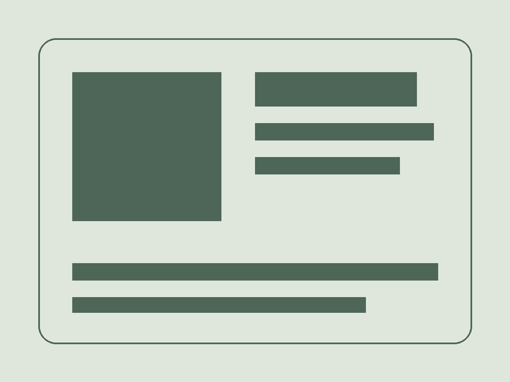

People
Research group directory
An academic directory of current lab members, organized by role and research position.
Principal Investigator
1 profileCurrent members
Research roles and student researchers
Jeon Sang Jun
Research in advanced manufacturing and intelligent engineering systems.
Chua Zhong Yang
Doctoral research in smart manufacturing, production systems, and data-driven engineering.

Tan Yu En
Research in design optimization and sustainable product-service systems.
Katherine Gao
Doctoral work on engineering intelligence, manufacturing systems, and digital methods.
Nicholas Ng
Research in data-driven manufacturing and next-generation production platforms.
Lee Jong Suk
Research spanning production intelligence and advanced industrial systems.
Kim Dong Hui
Research and project support in engineering design and manufacturing implementation.
Winston Lim Wei Liang
Applied research in product development, systems engineering, and prototyping workflows.
Alumni archive
Past members and affiliated researchersArchive
Baek Jung Woo
Ahn Il Hyuk
Jiao Lishi
Li Yu Hua
Wang Bing
Choi Joon Phil
Park Seong Je
Jamie Ng Suat Ling
Lei Ningrong
Kim Samyeon
Yao Xiling
Jayaraman Yogeshwaran
Wu Fang
Truong Ngoc Quoc Thang
Ko Hyunwoong
Passaporn Kanchanasri
Sacco Enea
Zhang Haining
Zhang Yongjie
Chua Ping Chong
Jerin Wesley R
Lim Che Han
Liu Bufan
Lee Guo Sheng
Chen Lequn